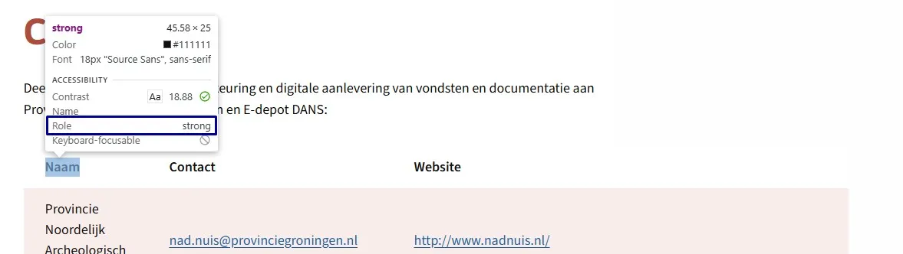
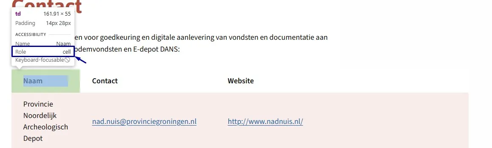
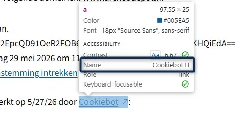
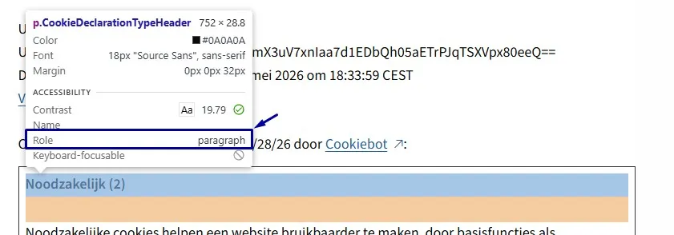
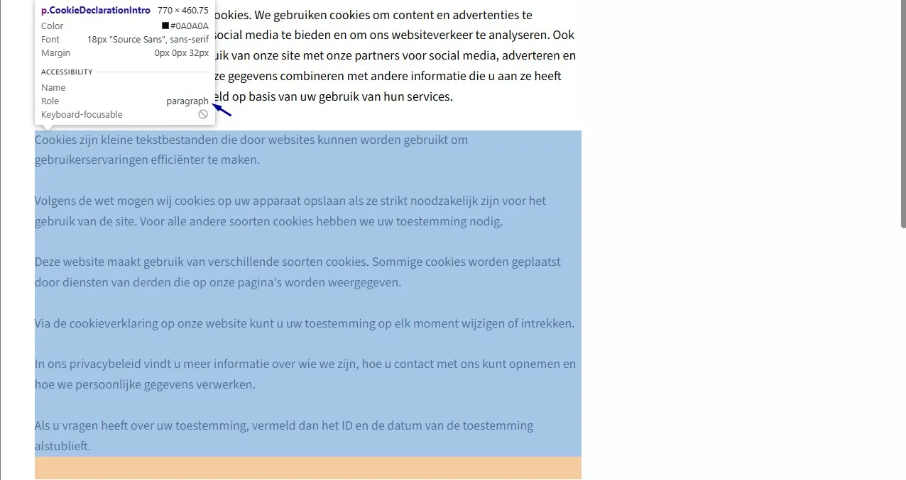
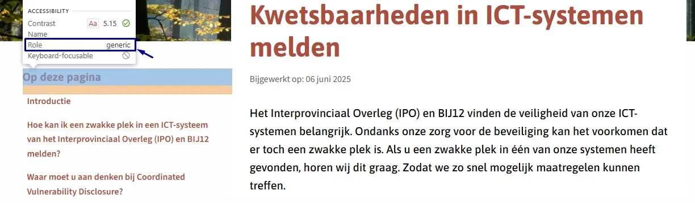
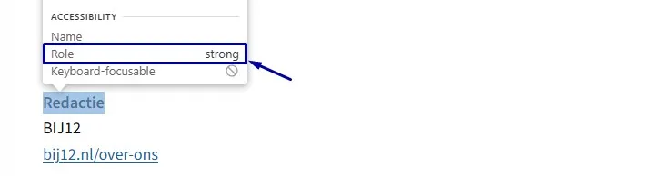
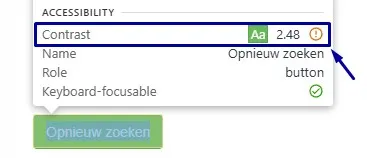
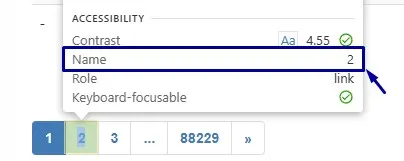
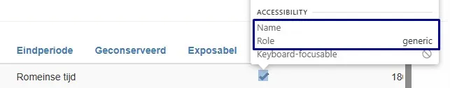

Geen bevindingen.
Samenvatting
Wij hebben de content op de website archeodepot.nl onderzocht tussen 1 en 12 juni 2026. Op dit moment is een deel van de succescriteria als voldoende beoordeeld. In dit rapport lees je welke punten nog verbetering behoeven en hoe deze kunnen worden aangepakt.
Gebruik dit rapport samen met de audit van de hoofdwebsite ipo.nl. De website van deze contentaudit is een technische kopie van ipo.nl. Een aantal technische problemen die niet op de hoofdwebsite voorkomen, staan wel in deze contentaudit beschreven.
In opdracht van
-
Voldoet
-
Afgekeurd
55
Totaal
- voldoet
Impact
Klein: 0
Medium: 0
Groot: 0
Type
Content: 0
Techniek: 0
Waarneembaar
- van 20
Bedienbaar
- van 20
Begrijpelijk
- van 13
Robuust
- van 2
Deze SC zijn afgekeurd:
Over dit onderzoek
- Onderzocht door
- Proper Access
- Opdrachtgever
- BIJ12
- Datum rapport
- 12 juni 2026
- Standaard
- WCAG 2.2
- Methodologie
- WCAG-EM
Scope van het onderzoek
- De content op de website archeodepot.nl
- Alle PDF's op de website archeodepot.nl
Buiten scope:
- Technische aspecten van de website (JavaScript, toetsenbordbediening, responsiveness, etc.)
- Subwebsite(s) waarbij de HTML en/of het systeem afwijkt van de onderzochte website
- De van derden afkomstige inhoud (wettelijke uitzondering voor de overheid)
- Oude PDF-bestanden (aanmaakdatum september 2018 of ouder)
- Oude video's (gepubliceerd op 23-09-2020 of ouder)
Basisniveau toegankelijkheidsondersteuning
- Mozilla Firefox, versie 148
- Google Chrome, versie 148
- Apple Safari, versie 18
- PAC software om PDF's te testen
- NVDA schermlezer in combinatie met Firefox
- VoiceOver schermlezer in combinatie met Safari
- Andere gangbare browsers en hulpapparatuur
Technologieën van de website
- HTML
- CSS
- JavaScript (ECMAScript 5)
- DOM
- WAI-ARIA
Hoe nu verder
Presentatie
Bekijk een korte presentatie (~15 min) met de belangrijkste bevindingen, cijfers en vervolgstappen — handig voor een teammeeting.
Bekijk presentatiePlan van aanpak
Download het plan van aanpak met een geprioriteerde aanpak om de gevonden problemen op te lossen.
Download plan van aanpakVoortgang opgeloste bevindingen
Samenwerken met je team
Exporteer alle bevindingen als CSV-bestand. Je kunt het in een (online) spreadsheet inladen om met je team samen te werken.
Importeer in Jira
Exporteer alle bevindingen als Jira-compatibel CSV-bestand. Je kunt het direct importeren via Jira > Issues > Import issues from CSV.
Zelf bijhouden in de browser
Houd per bevinding bij of het is opgelost. Je voortgang wordt opgeslagen in jouw browser. Niemand anders kan je resultaat zien.
0 van
0 opgelost
Gevonden problemen
Filter bevindingen op:
Impact:
Type:
Status:
Geen bevindingen gevonden voor dit filter.
Link naar pagina: https://www.archeodepot.nl/
Geen bevindingen.
Link naar pagina: https://www.archeodepot.nl/contact/
#1 - strong-element gebruikt voor opmaak in plaats van betekenis

Op deze pagina staat het strong-element om tekst visueel op te laten vallen, terwijl de inhoud zelf geen nadruk nodig heeft. Zie "Naam", "Contact" en "Website".
User story
Ik luister een pagina met een schermlezer. Ik wil dat alleen woorden die echt belangrijk zijn benadrukt worden. Anders krijgen willekeurige woorden de nadruk en raakt de betekenis vertekend.
Hoe te testen
Vraag je per vet/cursief af: is dit woord écht belangrijk of zou je het in spraak benadrukken? Inspecteer de HTML: rechtermuis klik op het vetgerukte woord - Inspecteren.
Oplossing
Gebruik strong alleen als een woord of zinsdeel echt belangrijk is, en door spraaksoftware benadrukt moet worden. Wil je tekst alleen visueel laten opvallen? Gebruik dan CSS, bijvoorbeeld met een eigen class-attribuut en font-weight: bold.
#2 - Gegevenstabel heeft geen kopcellen in de code

Op deze pagina staat onder de kop "Contact" een gegevenstabel. De juiste mark-up ontbreekt, waardoor de schermlezer niet kan bepalen hoe de cellen van deze tabel zich tot elkaar verhouden. Zie ook andere tabellen op deze pagina.
User story
Ik lees de website met een schermlezer. Als ik op een tabel kom, dan kan mijn schermlezer niet bepalen hoe de cellen zich tot elkaar verhouden. Ik verwacht dat mijn schermlezer duidelijk aangeeft welke gegevens bij elkaar horen.
Hoe te testen
Inspecteer de tabelstructuur met DevTools of een accessibility-inspectietool en controleer of de kolomkoppen zijn gemarkeerd met <th>-elementen. Onze Tabel-checker loopt automatisch door alle tabellen op een pagina en wijst aan welke cellen geen kopcel hebben. Navigeer daarna met een schermlezer door de tabel en bevestig dat de bijbehorende kopinformatie wordt aangekondigd bij elke gegevenscel.
Oplossing
Gebruik <th>-elementen voor de kopcellen van de tabel. Gebruik <td>-elementen voor de gegevenscellen.
Link naar pagina: https://www.archeodepot.nl/over/
Geen bevindingen.
Link naar pagina: https://www.archeodepot.nl/privacyverklaring/
Geen bevindingen.
Link naar pagina: https://www.archeodepot.nl/aanleverportaal/
#3 - Pdf-icoon heeft geen tekstalternatief
Op deze pagina staat een knop met de tekst "Print" die een pdf-icoon bevat. Het icoon heeft geen tekstalternatief, waardoor schermlezergebruikers niet weten dat de knop verwijst naar een "Print naar PDF"-functionaliteit. Deze informatie is belangrijk en moet op een toegankelijke manier worden aangeboden.
User story
Als ik mijn schermlezer gebruik, krijg ik geen informatie van iconen zonder tekst. Ik wil dat het pdf-icoon wordt voorgelezen, anders weet ik niet dat de knop een PDF-document print.
Hoe te testen
Inspecteer elke afbeelding, elk icoon en elke SVG in DevTools. Informatieve elementen hebben een tekstalternatief nodig dat de betekenis overbrengt; decoratieve img-elementen gebruiken alt="" en decoratieve svg-elementen aria-hidden="true". Verifieer met een schermlezer dat er geen ruis (bijvoorbeeld de bestandsnaam of "image") wordt voorgelezen.
Oplossing
Voeg verborgen tekst toe binnen de link (bijvoorbeeld "(PDF)") die visueel niet zichtbaar is, maar wel beschikbaar is voor schermlezers. Zo weten gebruikers dat de link naar een "Print naar PDF"-functionaliteit verwijst.
Link naar pagina: https://www.archeodepot.nl/cookieverklaring/
#4 - Icoon 'opent in nieuw browsertabblad' heeft geen tekstalternatief

Op deze pagina staan "Cookiebot"-links met een icoon dat aangeeft dat de link in een nieuw browsertabblad opent. Deze iconen hebben geen tekstalternatief, waardoor schermlezergebruikers dit gedrag niet horen.
Hetzelfde probleem komt voor op de pagina:
User story
Als schermlezergebruiker wil ik weten wanneer een link in een nieuw tabblad opent, zodat ik beter begrijp wat er gebeurt nadat ik de link activeer.
Hoe te testen
Navigeer met een schermlezer naar de links en controleer of de toegankelijke naam of bijbehorende tekst aangeeft dat de link in een nieuw tabblad opent.
Oplossing
Voeg de informatie dat de link een nieuw browsertabblad opent toe als visueel verborgen tekst die wel toegankelijk is voor schermlezers, bij voorkeur achteraan de linktekst.
#5 - Kop niet gemarkeerd als kop

Op deze pagina zijn de volgende teksten in de code niet gemarkeerd als kop: "Noodzakelijk (2)" en "Niet geclassificeerd (1)". Wanneer tekst als kop fungeert maar de bijbehorende mark-up mist, verliest de tekst zijn semantische betekenis en is hij niet toegankelijk voor bezoekers die schermlezers of andere hulpsoftware gebruiken. Koppen zijn essentieel om door de pagina te navigeren en de structuur van de inhoud te begrijpen.
User story
Ik lees de website met een schermlezer. Als ik via koppen door een pagina navigeer, dan mis ik koppen die alleen visueel zijn opgemaakt. Ik verwacht dat alle zichtbare koppen ook door mijn schermlezer worden herkend als kop.
Hoe te testen
Gebruik deze tool om de koppen op je webpagina te controleren: Koppen checker. Staat een kop niet in de lijst die deze tool teruggeeft? Dan is het niet als koptekst gemarkeerd. Visuele koppen moeten in de HTML staan, niet alleen als gestylede tekst.
Oplossing
Markeer koppen met het juiste HTML-element en gebruik daarbij het correcte kopniveau (h2 tot en met h6).
#6 - Onjuist gebruik p-element

Op deze pagina staat onder "Cookieverklaring" een tekstblok ("Cookies zijn kleine tekstbestanden die door … ID en de datum van de toestemming alstublieft.") met meerdere alinea's dat onjuist als één enkel <p>-element is gemarkeerd. De visuele structuur van de inhoud moet ook in de HTML terugkomen.
User story
Ik lees de website met een schermlezer. Als ik door de tekst navigeer, dan worden alle alinea's als één lang blok voorgelezen. Ik verwacht dat ik elke visuele alinea apart kan bereiken.
Hoe te testen
Inspecteer de inhoudsstructuur en controleer of visueel gescheiden alinea's ook als aparte <p>-elementen zijn gemarkeerd. Gebruik een schermlezer en navigeer per alinea (bijvoorbeeld met de P-toets in NVDA). Verifieer dat elke visueel onderscheiden alinea ook als afzonderlijke alinea wordt herkend en los kan worden bereikt.
Oplossing
Plaats elke alinea in een afzonderlijk <p>-element. Het aantal alinea's dat wordt weergegeven, moet overeenkomen met het aantal <p>-elementen in de code.
Link naar pagina: https://www.archeodepot.nl/proclaimer/
Geen bevindingen.
Link naar pagina: https://www.archeodepot.nl/kwetsbaarheid-melden-coordinated-vulnerability-disclosure/
#7 - Kop niet gemarkeerd als kop

Op deze pagina is de tekst "Op deze pagina" in de code niet gemarkeerd als kop.
User story
Ik lees de website met een schermlezer. Als ik via koppen door een pagina navigeer, dan mis ik koppen die alleen visueel zijn opgemaakt. Ik verwacht dat alle zichtbare koppen ook door mijn schermlezer worden herkend als kop.
Hoe te testen
Navigeer met een schermlezer of een accessibility-tool van de browser via de koppen en controleer of alle visuele koppen zijn gemarkeerd met een passend kop-element (<h1>–<h6>).
Oplossing
Markeer deze kop met een passend HTML-kopelement en gebruik daarbij het juiste kopniveau (bijvoorbeeld h2 tot h6).
Link naar pagina: https://www.archeodepot.nl/toegankelijkheid/
Geen bevindingen.
Link naar pagina: https://www.archeodepot.nl/colofon-2/
#8 - strong-element gebruikt in plaats van kop-element

Op deze pagina zijn de volgende teksten koppen, maar de kop-elementen ontbreken. In plaats daarvan zijn strong-elementen gebruikt om ze er als kop uit te laten zien. Zie "Redactie" en "Websitebureau en hosting".
User story
Ik lees de website met een schermlezer. Als ik door de koppen van een pagina navigeer, dan mis ik titels die alleen vet of cursief zijn opgemaakt. Ik verwacht dat alle titels als echte koppen zijn gemarkeerd, zodat ik de paginastructuur kan volgen.
Hoe te testen
Gebruik deze tool om de koppen op je webpagina te controleren: Koppen checker. Staat een kop niet in de lijst die deze tool teruggeeft? Dan is het niet als koptekst gemarkeerd. Visuele koppen moeten in de HTML staan, niet alleen als gestylede tekst.
Oplossing
Verwijder het strong-element of em-element en markeer deze tekst met een passend kop-element, zoals h2 of h3. De visuele opmaak kan eventueel met CSS worden toegepast. Dit type element wordt vaak toegevoegd via de knop "B" (vet) in een tekstbewerker.
Link naar pagina: https://www.archeodepot.nl/applicatie/
Geen bevindingen.
Link naar pagina: https://www.archeodepot.nl/404-pagina-niet-gevonden/
#9 - Onduidelijke koptekst
Op deze pagina staat een kop "Ga direct naar" die de inhoud die erop volgt niet voldoende beschrijft. Koppen als "Ga direct naar", "Direct naar" of "Ga naar" zijn te generiek en geven geen betekenisvolle informatie over het doel van de inhoud. Schermlezergebruikers vertrouwen vaak op koppen om door de pagina te navigeren en de structuur te begrijpen. Koppen moeten daarom duidelijk en bondig zijn en het onderwerp van de volgende inhoud goed weergeven.
User story
Ik lees de website met een schermlezer. Als ik via koppen door een pagina navigeer, dan geven labels als "Ga naar" of "Direct naar" me geen bruikbare informatie. Ik verwacht dat elke kop duidelijk omschrijft welke inhoud erop volgt.
Hoe te testen
Maak een overzicht van alle koppen op de pagina (met HeadingsMap of deze Koppen checker). Elke kop moet duidelijk genoeg beschrijven wat erop volgt, zodat de gebruiker een navigatiekeuze kan maken. Vage koppen als "Sectie" of "Meer info" zijn onvoldoende.
Oplossing
Vervang de vage kop door een meer beschrijvende kop die het onderwerp van de bijbehorende sectie duidelijk weergeeft.
Link naar pagina: https://www.archeodepot.nl/zoeken/
Geen bevindingen.
Link naar pagina: https://www.archeodepot.nl/zoek/
#10 - Onvoldoende contrast knoptekst

Op deze pagina heeft de knop "Opnieuw zoeken" (zichtbaar na het klikken op de knop "Zoeken") onvoldoende kleurcontrast. De witte tekst op de groene achtergrond (#5cb85c) heeft een contrastverhouding van 2,5:1. Dat is lager dan de vereiste 4,5:1 voor normale tekst.
Op deze pagina hebben in de kolom "VondstId" sommige items, bijvoorbeeld het item met de naam "POM 7408", een link "1 Opname" met dezelfde kleurcombinatie.
User story
Ik heb een visuele beperking. Als ik een knop zie, dan is de tekst moeilijk leesbaar door te weinig contrast met de achtergrond. Ik verwacht dat knoptekst altijd duidelijk zichtbaar is.
Hoe te testen
Gebruik Axe of Lighthouse voor een automatische contrast-check, en meet randgevallen handmatig met Colour Contrast Analyzer. Minimum is 4,5:1 voor normale tekst en 3,0:1 voor grote tekst (vanaf 24px normaal of 18,7px bold). Let op placeholders, tekst op afbeeldingen en disabled-ogende elementen.
Oplossing
Zorg ervoor dat het contrast van de knoptekst minimaal 4,5:1 is.
#11 - Paginering: linktekst is te kort

Op deze pagina geven de pagineringslinks onvoldoende context. Ziende gebruikers begrijpen dat "1", "2", "3", enzovoort paginanummers zijn, maar voor gebruikers met een visuele beperking of een schermlezer is dat niet duidelijk. De paginering verschijnt nadat op de knop "Zoeken" is geklikt.
User story
Ik lees de website met een schermlezer. Als ik door de pagineringslinks navigeer, dan hoor ik alleen losse cijfers zoals 'één', 'twee', 'drie'. Ik verwacht dat elke link duidelijk aangeeft dat het om een paginanummer gaat.
Hoe te testen
Open de linklijst in een schermlezer (Insert+F7 in NVDA) en beoordeel elke link los van context: zou je erop klikken? Vage teksten als "Lees meer", "Klik hier" of dezelfde tekst met verschillende bestemmingen moeten worden gemarkeerd. Afbeeldinglinks hebben een alt nodig die de bestemming beschrijft.
Oplossing
Voeg context toe aan de linktekst van de pagineringsnummers, bijvoorbeeld "Pagina 1", "Pagina 2", enzovoort.
#12 - Informatief icoon heeft geen tekstalternatief

Op deze pagina staan, nadat op de knop "Zoeken" is geklikt, in de kolommen "Geconserveerd", "Exposabel" en "Geselecteerd" informatieve iconen (vinkjes) die informatie overbrengen. Deze iconen zijn via CSS verborgen voor hulpsoftware en hebben geen tekstalternatief. Hierdoor kunnen schermlezergebruikers niet vaststellen of de bijbehorende waarde in een tabelcel aanwezig is of niet.
User story
Als schermlezergebruiker wil ik dat informatieve iconen een tekstalternatief hebben, zodat ik de informatie die de tabel overbrengt kan begrijpen.
Hoe te testen
Navigeer met een schermlezer door de tabel en verifieer of de betekenis van elk vinkje wordt aangekondigd zodra de bijbehorende cel focus krijgt.
Oplossing
Geef elk informatief icoon een tekstalternatief. Maak bijvoorbeeld tekst als "Ja", "Aanwezig" of een andere passende waarde beschikbaar die de betekenis van het vinkje weergeeft.
Over dit onderzoek
Leeswijzer
Onze rapporten zijn anders. Bij het bespreken van de gevonden problemen volgen wij niet de structuur van de norm, maar die van jouw website of app. Hierdoor kun je gewoon per pagina of scherm aan de slag gaan. Wel zo makkelijk! Je vindt verderop een overzicht van alle pagina’s met problemen.
We geven je bij elk gevonden issue een paar voorbeelden, maar niet een complete lijst. Controleer zelf of het probleem ook nog op andere plekken voorkomt. Zie het rapport als een leidraad.
Gebruikte norm
Dit onderzoek laat zien in hoeverre de website op dit moment voldoet aan WCAG 2.2, niveau A en AA. WCAG staat voor Web Content Accessibility Guidelines. Dit is de internationale norm voor digitale toegankelijkheid. De Europese norm EN 301 549 bevat alle eisen van WCAG op niveau A en AA.
In dit rapport hebben we korte beschrijvingen van de succescriteria uit de norm opgenomen, met een algemene uitleg erbij. Wil je ze helemaal lezen? Bekijk dan de documentatie van WCAG.
Gebruikte onderzoeksmethode
We gebruiken de onderzoeksmethode WCAG-EM van het W3C. Het proces ziet er als volgt uit:
- vaststellen wat binnen en buiten scope valt
- vaststellen welke technologieën zijn gebruikt
- steekproef (sample) samenstellen
- steekproef onderzoeken
- gevonden issues beschrijven
Het grootste deel van het onderzoek doen we met de hand. Voor een deel van de toegankelijkheidseisen gebruiken we automatische tools als ondersteuning, zoals axe-core en Chrome Developer Tools.
Belangrijk om te weten
Dit rapport helpt je om de toegankelijkheid van je website te verbeteren. Maar let op: het is geen definitieve, volledige lijst van alle aanwezige toegankelijkheidsproblemen. Dat zit zo:
Het is een steekproef
Ten eerste is het onderzoek gebaseerd op een steekproef. Die is op een betrouwbare manier genomen, en de meeste problemen zullen daardoor zeker aan het licht komen. Toch kan een probleem net buiten de steekproef vallen. Bij een volgend onderzoek kan het wel ontdekt worden.
Op basis van falsificatie
We beoordelen vanuit het principe van falsificatie. Dat houdt in dat we proberen te bewijzen dat iets niet waar is, in plaats van te bevestigen dat het klopt. ‘Voldoet’ betekent daarom dat we geen reden hebben gevonden om een punt af te keuren. Maar als we later wél een reden vinden, kan het alsnog worden afgekeurd.
Voortschrijdend inzicht
Het komt voor dat de beoordeling van een succescriterium op detailniveau verandert. De norm beschrijft namelijk niet élk mogelijk scenario. Samen met andere onderzoeksbureaus overleggen we hoe we met bepaalde situaties omgaan. Zo kan iets dat nu wordt afgekeurd, soms bij een volgend onderzoek worden goedgekeurd en andersom.
Oplossen leidt tot nieuw probleem
Ten slotte kan het gebeuren dat bij het oplossen van een probleem onbedoeld een nieuw toegankelijkheidsprobleem ontstaat. Dat komt dan bij een volgend onderzoek pas naar voren.
Hoe werkt dit rapport?
Bevindingen bekijken en filteren
Alle gevonden toegankelijkheidsproblemen staan onder Gevonden problemen. Je kunt de bevindingen filteren op:
- Impact (Groot, Medium, Klein, Advies) — hoe ernstig is het probleem voor de gebruiker?
- Type (Content, Techniek) — moet de inhoud of de techniek worden aangepast?
- Status (Open, Opgelost) — welke problemen zijn al verholpen?
Voortgang bijhouden
Je kunt je voortgang op twee manieren bijhouden:
- CSV-export — exporteer alle bevindingen als CSV-bestand en laad het in een (online) spreadsheet om met je team samen te werken.
- Jira-export — exporteer alle bevindingen als Jira-compatibel CSV-bestand. Importeer het via Jira > Issues > Import issues from CSV. Bevindingen worden aangemaakt als bugs met prioriteit op basis van impact.
- Registreer in de browser — activeer deze optie om per bevinding bij te houden of het is opgelost. Je voortgang wordt opgeslagen in je browser. Niemand anders kan je resultaat zien. Let op: de voortgang is gekoppeld aan je browser. Als je een andere browser of een ander apparaat gebruikt, begint de telling opnieuw.
- Plan van aanpak — download een geprioriteerd plan van aanpak om de gevonden problemen stap voor stap op te lossen. Dit is beschikbaar bij audits vanaf maart 2026.
Link naar een specifieke bevinding delen
Bij elke bevinding verschijnt een link-icoon wanneer je er met de muis overheen gaat. Klik op dit icoon om de directe link naar die bevinding te kopiëren. Je kunt deze link plakken in een e-mail of chatbericht, bijvoorbeeld om een vraag te stellen aan Proper Access over een specifiek punt.